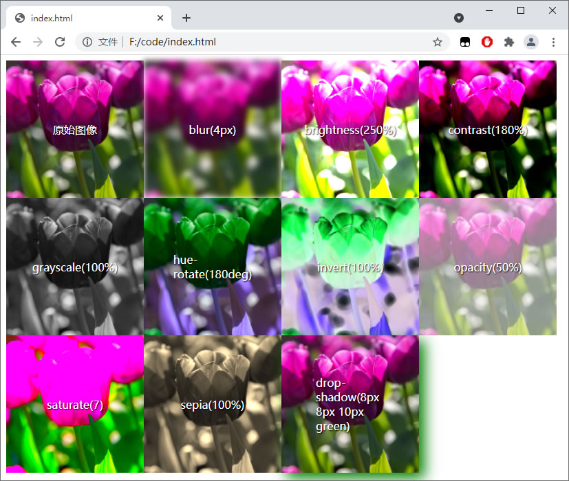
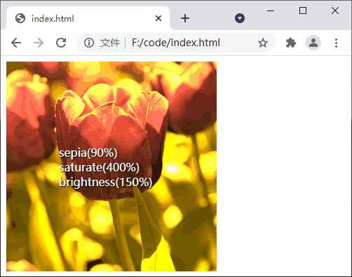
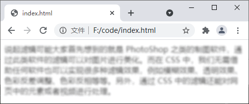

CSS filter（滤镜）详解
说起滤镜可能大家首先想到的就是 PhotoShop 之类的制图软件，通过此类软件的滤镜可以对图片进行美化。而在 CSS 中，我们无需借助任何软件也可以实现很多种滤镜效果，例如模糊效果、透明效果、色彩反差调整、色彩反相等等。另外，通过 CSS 中的滤镜还能对网页中的元素或者视频进行处理。本节我们就来学习一下 CSS 中滤镜的使用。
CSS 中实现滤镜效果需要通过 filter 属性并配合一些函数来实现，如下所示：
另外，您也可以为同一个元素使用多个滤镜效果，只需要将每个滤镜函数使用空格分隔，示例代码如下：
CSS 中实现滤镜效果需要通过 filter 属性并配合一些函数来实现，如下所示：
| 滤镜 | 描述 |
|---|---|
| none | 默认值，表示没有效果 |
| blur(px) | 为图像设置高斯模糊，默认值为 0，单位为像素，值较大越模糊 |
| brightness(%) | 调整图像的亮度，默认值为 100％，代表原始图像；0％ 表示没有亮度，图像将完全变黑；当值超过 100％ 时图像将变得更亮 |
| contrast(%) | 调整图像的对比度，默认值为 100％，代表原始图像；0％ 将使图像完全变黑；当值超过 100％ 时图像将获得更高的对比度 |
| drop-shadow(h-shadow v-shadow blur spread color) |
为图像添加阴影效果，参数说明如下：
|
| grayscale(%) | 将图像转换为灰度图像，默认值为 0%，表示原始图像；100％ 表示将图像完全变成灰度图像（即黑白图像），不允许为负值 |
| hue-rotate(deg) | 给图像应用色相旋转，该值用来定义色环的度数，默认值为 0deg，代表原始图像，最大值为 360deg |
| invert(%) | 反转图像，默认值为 0%，表示原始图像；100% 则表示完全反转，不允许使用负值 |
| opacity(%) | 设置图像的不透明度，默认值为 100%，表示原始图像；0% 表示完全透明，不允许使用负值 |
| saturate(%) | 设置图像的饱和度，默认值为 100%，表示原始图像；0% 表示图像完全不饱和，不允许使用负值 |
| sepia(%) | 将图像转换为棕褐色，默认值为 0%，表示原始图像；100% 表示图像完全变成棕褐色，不允许使用负值 |
| url() | url() 函数用来指定一个 XML 文件，文件中设置了一个 SVG 滤镜，并且可以包含一个锚点来指定具体的滤镜元素 |
| initial | 将属性设置为其默认值 |
| inherit | 从父元素继承此属性的值 |
提示：这些 CSS 函数的参数值基本上都在 0~1（0%~100%）之间，但也有几个例外，比如 blur() 函数的参数值以像素为单位，而 hue-rotate() 函数的参数值则是以“deg”为单位。
【示例】下面通过一个示例来演示 CSS 中滤镜的使用：
<!DOCTYPE html>
<html>
<head>
<style>
div {
width: 200px;
height: 200px;
float: left;
position: relative;
}
div span {
position: absolute;
top: 50%;
left: 50%;
transform: translate(-50%, -50%);
color: white;
text-shadow: 1px 1px 2px black;
}
img {
width: 100%;
}
div img.blur {
filter: blur(4px);
}
div img.brightness {
filter: brightness(250%);
}
div img.contrast {
filter: contrast(180%);
}
div img.grayscale {
filter: grayscale(100%);
}
div img.huerotate {
filter: hue-rotate(180deg);
}
div img.invert {
filter: invert(100%);
}
div img.opacity {
filter: opacity(50%);
}
div img.saturate {
filter: saturate(7);
}
div img.sepia {
filter: sepia(100%);
}
div img.shadow {
filter: drop-shadow(8px 8px 10px green);
}
</style>
</head>
<body>
<div><img src="./tulip.jpg" alt="tulip"> <span>原始图像</span></div>
<div><img class="blur" src="./tulip.jpg" alt="tulip"> <span>blur(4px)</span></div>
<div><img class="brightness" src="./tulip.jpg" alt="tulip"><span>brightness(250%)</span></div>
<div><img class="contrast" src="./tulip.jpg" alt="tulip"> <span>contrast(180%)</span></div>
<div><img class="grayscale" src="./tulip.jpg" alt="tulip"> <span>grayscale(100%)</span></div>
<div><img class="huerotate" src="./tulip.jpg" alt="tulip"> <span>hue-rotate(180deg)</span></div>
<div><img class="invert" src="./tulip.jpg" alt="tulip"> <span>invert(100%)</span></div>
<div><img class="opacity" src="./tulip.jpg" alt="tulip"> <span>opacity(50%)</span></div>
<div><img class="saturate" src="./tulip.jpg" alt="tulip"> <span>saturate(7)</span></div>
<div><img class="sepia" src="./tulip.jpg" alt="tulip"> <span>sepia(100%)</span></div>
<div><img class="shadow" src="./tulip.jpg" alt="tulip"> <span>drop-shadow(8px 8px 10px green)</span></div>
</body>
</html>
运行结果如下图所示：

图：filter 属性演示
图：filter 属性演示
另外，您也可以为同一个元素使用多个滤镜效果，只需要将每个滤镜函数使用空格分隔，示例代码如下：
<!DOCTYPE html>
<html>
<head>
<style>
div {
width: 300px;
height: 300px;
position: relative;
}
div span {
position: absolute;
top: 50%;
left: 50%;
transform: translate(-50%, -50%);
color: white;
text-shadow: 1px 1px 2px black;
}
img {
width: 100%;
filter: sepia(90%) saturate(400%) brightness(150%);
}
</style>
</head>
<body>
<div><img src="./tulip.jpg" alt="tulip"><span>sepia(90%) saturate(400%) brightness(150%)</span></div>
</body>
</html>
运行结果如下图所示：

图：滤镜的组合使用
图：滤镜的组合使用
注意：在组合使用多个滤镜效果时，要特别注意使用的顺序，否则会产生意料之外的效果，例如在使用 grayscale() 之后再使用 sepia() 将产生一个完整的灰度图片。
不仅仅是图像，任何 HTML 元素都可以使用滤镜效果，例如文本、视频等都可以使用滤镜来美化，示例代码如下：
<!DOCTYPE html>
<html>
<head>
<style>
div {
filter: blur(2px) contrast(50%) brightness(80%);
}
</style>
</head>
<body>
<div>说起滤镜可能大家首先想到的就是 PhotoShop 之类的制图软件，通过此类软件的滤镜可以对图片进行美化。而在 CSS 中，我们无需借助任何软件也可以实现很多种滤镜效果，例如模糊效果、透明效果、色彩反差调整、色彩反相等等。另外，通过 CSS 中的滤镜还能对网页中的元素或者视频进行处理。</div>
</body>
</html>
运行结果如下图所示：

图：为页面中的其它元素设置滤镜效果
图：为页面中的其它元素设置滤镜效果
提示：IE 浏览器不支持 filter 属性
关注公众号「站长严长生」，在手机上阅读所有教程，随时随地都能学习。内含一款搜索神器，免费下载全网书籍和视频。

微信扫码关注公众号